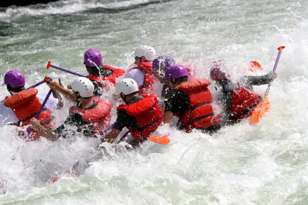
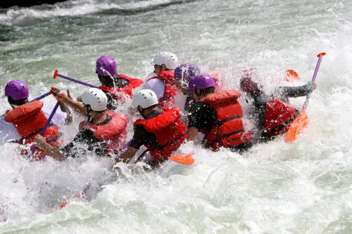

Learn more about us

Rafting and whitewater rafting are recreational outdoor activities which use an inflatable raft to navigate a river or other body of water. This is often done on whitewater or different degrees of rough water.

Rafting and whitewater rafting are recreational outdoor activities which use an inflatable raft to navigate a river or other body of water. This is often done on whitewater or different degrees of rough water.
Our safety crew is an essential part of the safe and smooth running of each trip. Chief amongst them is the oarsman on the safety boat, a slightly larger oarboat which carries safety equipment, first aid and lunch. His/her job is to oversee safety below each rapid from a stable position high in an eddy. From this lofty position he can spot an errant swimmer and direct the speedy team of safety kayakers, while being a great stable platform for picking up those swimmers. He aims to stay upright all day (never 100% guaranteed of course!) and the oar boat is a great place to ride if you want to experience the thrill of the Nile without the spills..

We have a lively, cheerful and loyal crew of extremely athletic safety kayakers, who spot swimmers before they are even aware of being in the water, and will snatch them out of the maelstrom. This is the entry-level position for our Ugandan crew. Once someone has proved to have good basic kayaking skills, we may take them onto our trainee team, where they learn about safety from the ground up. As skills and knowledge improve, they may begin to train in other skills, like rowing or tandem kayaking. Those with the best English and most sociable personalities may finally end up as guides, which is an aspiration for all

 
